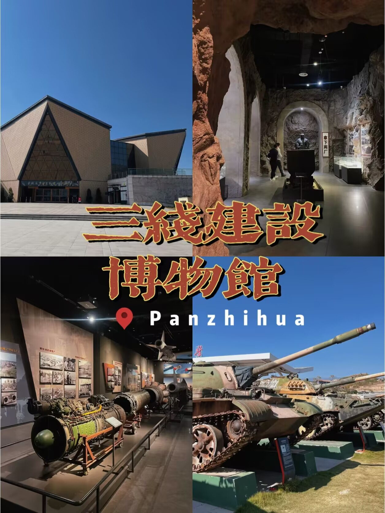
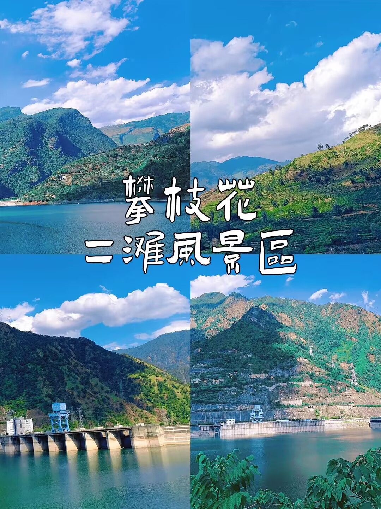
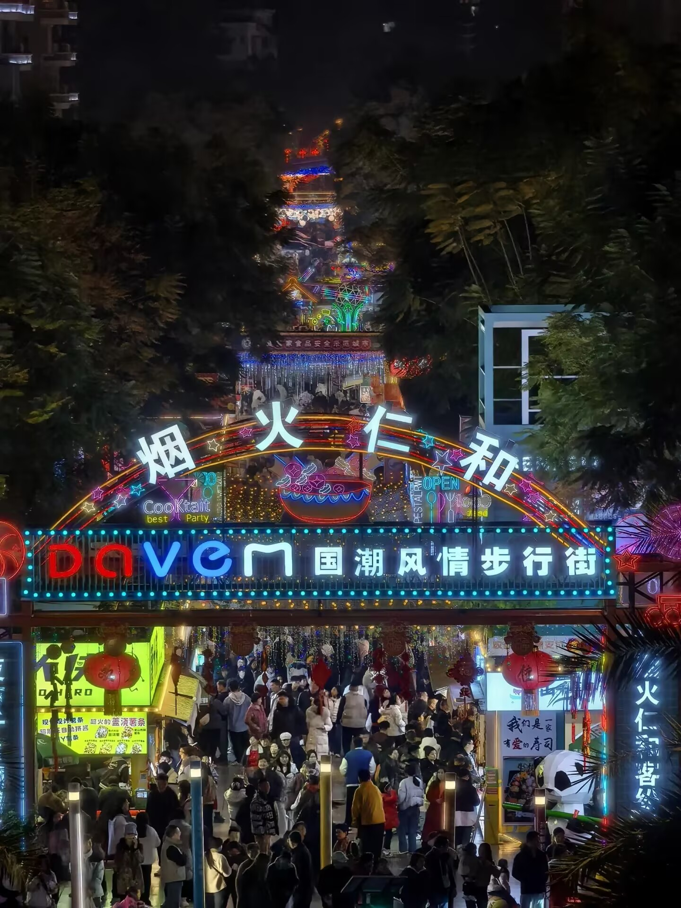
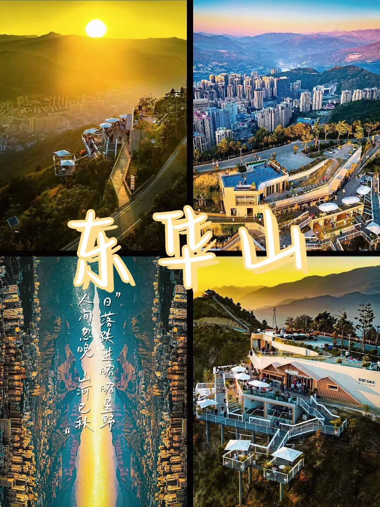
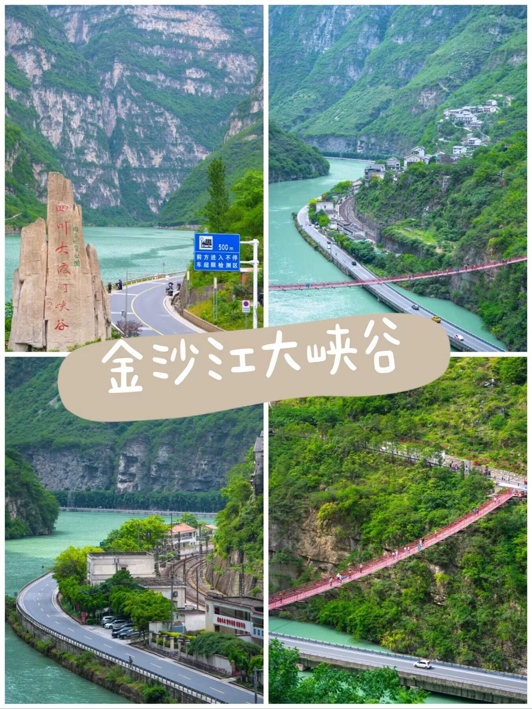
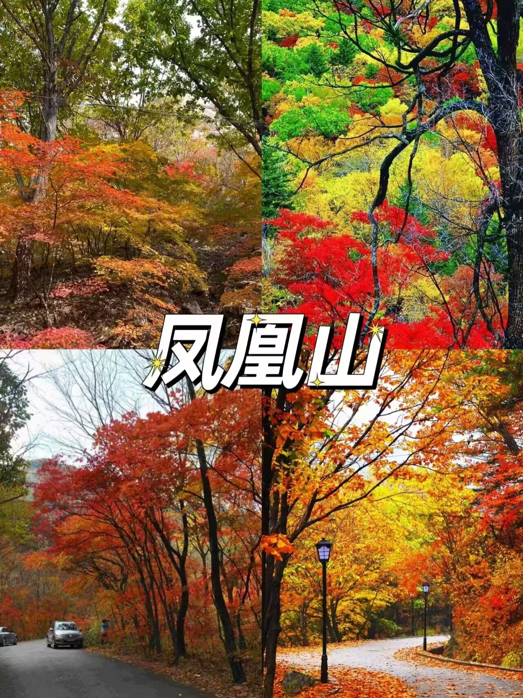
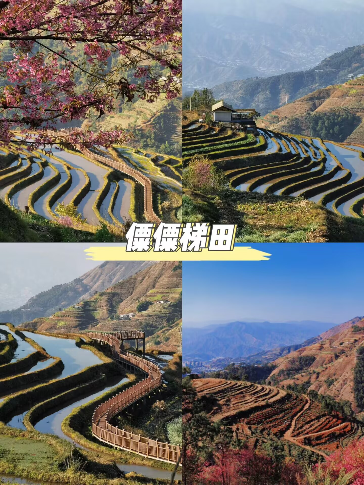

-

三线建设博物馆
攀枝花中国三线建设博物馆，作为国内规模最大的三线建设历史博物馆，拥有全面的展陈和丰富的藏品，吸引着人们前来了解重要的历史。从广场上的飞机、大炮开始，可以欣赏到中国近代工业建设的珍贵遗产，感受到上世纪60-80年代产业发展的魅力。
-

二滩水电站
二滩水电站位于攀枝花市盐边与米易两县交界处，是雅砻江水电基地梯级开发的第一个水电站。该水电站地处雅砻江下游，距离攀枝花市区约46公里。二滩水电站的最大坝高为240米，水库正常蓄水位海拔1200米，总库容5.8立方千米。建设始于1991年，并于1998年7月第一台机组发电，2000年完工，是中国在20世纪建成投产的最大水电站。
-

烟火仁和
仁和，攀枝花市辖区。仁和烟火，国潮风情步行街，充满活力与欢乐的地方，有各种特色美食小吃，当季水果， 还有刺激的游乐设施，趣味十足的游戏项目，有吃有玩的，太适合逛吃逛吃了。
-

东华山山地体育公园
攀枝花东区，这里是拥有 6.8 公里复合绿道和 4 条步道，适合徒步和登山，还能体验全国第二长斜行电梯。沿途有“城市之眼”“伴山咖啡”等核心景观节点，是拍照打卡的绝佳之地。
-

金沙江大峡谷
这里两侧是陡峭的悬崖峭壁，中间是清澈河流和一条蜿蜒曲折的水上公路，让人不襟感叹大自然的鬼斧神工，车流在峡谷间穿行，与绝壁深谷连为一体，令人目不暇接，叹为观止，有 “地质天书，旷世幽谷”的美誉。
-

凤凰山公园
东区凤凰花公园：位于东区枣子坪下街攀枝花市第二十一中小学北侧。当凤凰花盛开的时节，这里便是一片火红的海洋，是拍照、打卡、赏花的好去处，能感受到攀枝花独有的浪漫色彩。
-

迤沙拉村
攀枝花市仁和区平地镇，一个名字里就藏着诗与远方的地方。在这里，时间仿佛慢了半拍，石板路、青瓦房，每一砖一瓦都诉说着千年的故事。
-

僳僳梯田
米易傈僳梯田景区位于攀枝花市米易县新山傈僳族乡，新山乡是四川省傈僳族聚集区之一，保留着原始古朴的民族习俗。这片梯田已有600多年的历史，级数高达千余级。站在观景台上俯瞰，层层叠叠的梯田如链似带，从山脚一直延伸到山顶，尤其在日落时分，阳光洒在梯田上，金光闪闪，美不胜收。